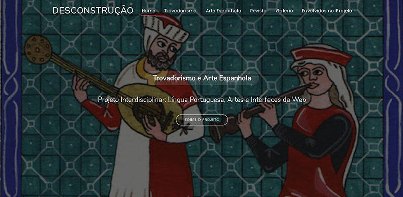

Sobre Mim:

Meu nome é Natali Schers e eu tenho 16 anos. Atualmente estudo na ETEC Prof.ª Maria Cristina Medeiros, faço Informática para Internet Integrado ao Ensino Médio, e estou no meu terceiro ano do curso de inglês na Skill Idiomas.
Originalidade, comprometimento, ética e cumprimento de prazos são muito importantes para mim. Adoro de trabalhar em grupo e produzir trabalhos inovadores e dinâmicos com diferentes tipos de pessoas.
Gosto de fazer coisas que estimulam minha criatividade, como: pintar com aquarela, desenhar, construir esculturas de argila, criar ilustrações e animações, etc. Também passo muito tempo lendo, sendo os meus livros preferidos: A Seleção, O Menino da Lista de Schindler, A Caçadora de Dragões e Star Wars - Estrelas Perdidas.
Gosto muito de desenvolver sites (com HTML, CSS e JavaScript) e editar de templates. Neste momento, estou aprendendo a fazer edição de vídeos e criar animações, pois gosto muito de trabalhar com conteúdo digital e quero explorar mais essa área.


Cursos que concluí:
Conceitos de responsividade e experiência do usuário
Introdução ao Git e ao GitHub
Lógica de programação essencial
Introdução a criação de sites com HTML5 e CSS3
Portfólio:

Site Pessoal
Esta é a primeira versão do meu portfólio em forma de página para internet. Foi o primeiro site que criei e foi desenvolvido apenas com HTML e CSS.
Clique na imagem para acessar o site!

ArteNossa
Esta é uma revista digital desenvolvida em grupo, nomeada ArteNossa. A proposta desse site é falar um pouco sobre arte espanhola e trovadorismo.
Clique na imagem para acessar o site!

Cultura Védica
Cultura Védica é um site sobre yoga e sua história, períodos do yoga, Shiva e Kamadeva. Nele utilizei HTML, CSS, JavaScript e Bootstrap.
Clique na imagem para acessar o site!

Desconstrução
Esta é uma revista digital desenvolvida por mim, nomeada Desconstrução. A proposta desse site é falar um pouco sobre arte espanhola e trovadorismo.
Clique na imagem para acessar o site!
Prototipagem Prática
Essa é uma atividade do componente Desenvolvimento Para Dispositivos Móveis (DDM), cuja proposta era elaborar um aplicativo de "rachar a conta" e criar exemplos de persona.